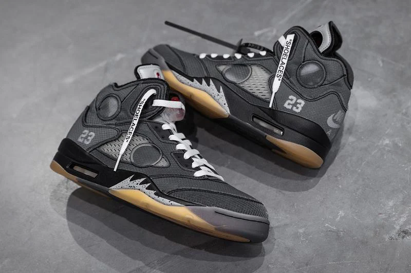

The Off-White x Air Jordan 5 "Muslim" is a unique collaboration that showcases Virgil Abloh’s distinctive design language. Released as part of a limited collection, this sneaker features a primarily beige upper, crafted from premium materials that blend style and functionality. **Key Features:** - **Colorway**: The shoe features a muted beige tone, giving it a versatile and understated look, with black and white accents for contrast. - **Design Elements**: Signature Off-White details, such as the trademark zip tie and bold branding, enhance the shoe's aesthetic. The transparent netting and reflective accents pay homage to the original Jordan 5 while adding a modern twist. - **Performance**: The Jordan 5 silhouette is known for its supportive fit and comfortable cushioning, making it suitable for both on and off the court. - **Cultural Significance**: The collaboration reflects a blend of streetwear culture and high fashion, making it a sought-after item among sneaker collectors and fashion enthusiasts alike. Overall, the Off-White x Air Jordan 5 "Muslim" is a striking piece that embodies both innovation and homage to the legacy of the Air Jordan line.
